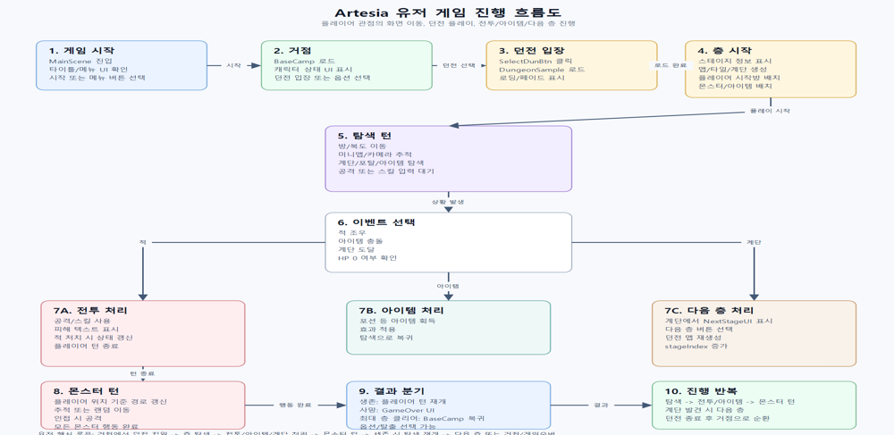
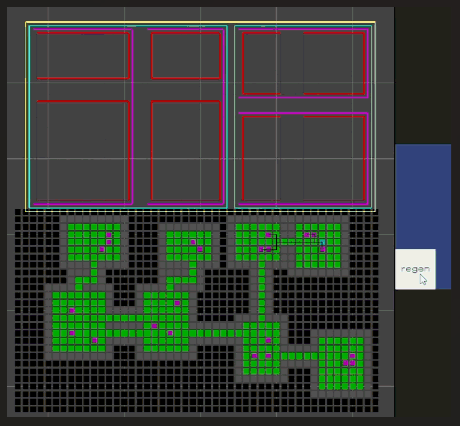

데이타트렌드
사원 · AI사업전략
- AI 바우처 사업수행계획서 작성 및 관련 자료 조사
- AI 도입 기업 대상 솔루션 제안 자료 작성
- 사업 현황 분석 및 보고서 작성

Data Engineering · AI Development
데이터 엔지니어 / AI 개발자
Python과 SQL을 중심으로 데이터 파이프라인, 분석, AI 서비스 개발 역량을 쌓고 있습니다. 사업기획 경험과 데이터사이언스 학습을 연결해 실무에 바로 쓰이는 결과물을 만드는 개발자를 지향합니다.
About
서강대학교 미디어공학과를 졸업하고 빅데이터분석기사, 네트워크관리사 2급 등 데이터·IT 관련 자격증을 보유하고 있습니다. 데이타트렌드에서 AI 바우처 사업수행계획서 작성 및 AI 사업전략 업무를 수행하며 실무 경험을 쌓았고, 서울대학교 데이터사이언스 부트캠프를 통해 이론적 기반을 강화했습니다.
현재 매력일자리 개발자 과정을 이수 중이며, Python과 SQL을 중심으로 데이터 파이프라인 구축 및 AI 서비스 개발 역량을 키우는 동시에 최신 AI 기술 트렌드, 영상 처리, RAG 등 실무에 적용 가능한 기술을 폭넓게 학습하고 있습니다.
Experience
사원 · AI사업전략
Education
미디어공학과 · 학점 3.53 / 4.5
미디어 기술, 데이터 처리, 소프트웨어 공학 관련 전공 과목 이수
Certificates
한국데이터산업진흥원
한국생산성본부
한국정보통신자격협회
Portfolio Projects
이력서에 정리된 프로젝트 목록을 기준으로, 실제 화면과 산출물이 있는 프로젝트는 스크린샷을 함께 배치했습니다.

건설현장 사고 시나리오를 중대재해처벌법, 산업안전보건법 PDF와 연결해 위반 조항을 판단하는 RAG 시스템입니다.
단독 개발로 PDF 전처리, 검색 인덱싱, 근거 조항 매칭, 대시보드 화면까지 구현하며 RAG 서비스 흐름을 검증했습니다. Google Colab Pro를 연결해 14B 모델 추론을 처리했습니다.

다나와 PC 부품 가격 자동 수집, 이상치 탐지, 가격 예측 모델, IT 뉴스 대시보드를 연결한 분석 서비스입니다.
단독 개발로 크롤링, SQLite 데이터 모델링, 분석 로직, Streamlit 대시보드를 연결해 가격·뉴스 데이터 흐름을 통합했습니다.



Unity2D 기반 게임 프로젝트 팀장 및 기획 총괄, 역할 분배와 일정 관리를 포함해 전 과정을 리딩했습니다.
PM 역할로 게임 콘셉트와 개발 범위를 정리하고, 팀원 역할 분배와 진행 관리를 맡아 완성 화면까지 이끌었습니다.




SQL, RFM 분석, 머신러닝, 시계열 예측, SQLD까지 직접 설계하고 수행한 이커머스 분석 파이프라인입니다.
단독 개발로 분석 주제 선정부터 notebook 실험, RFM·Prophet·SHAP 결과 정리와 대시보드 시각화까지 수행했습니다.


Streamlit 기반 영단어 학습 웹 앱으로, 학습 진도 추적과 퀴즈, 단어장, 통계 화면을 구현했습니다.
단독 개발로 학습 흐름, 퀴즈 상태 관리, 단어장 관리, 통계 화면을 구성하며 사용자 중심 앱 구조를 연습했습니다.


O2O 서비스 기반 수요 예측 모델을 설계하고, 시계열 데이터 분석과 예측 성능 최적화를 수행했습니다.
단독 개발로 수요 점수 산정 기준, 검색·필터 UI, 지역 랭킹과 설명 화면을 설계해 예측 결과를 해석 가능하게 정리했습니다.
Project Details
단독 개발 프로젝트 중 데이터 흐름과 AI 적용 과정이 뚜렷한 두 프로젝트를 중심으로 문제 정의부터 개선점까지 정리했습니다.
Strengths
빅데이터분석기사 보유, SQL/Python 활용, EDA와 예측 모델링 경험을 갖추고 있습니다.
RAG와 영상처리를 학습하며 AI 사업기획 실무 경험을 서비스 개발 관점으로 확장하고 있습니다.
네트워크관리사 2급, 데이터베이스 설계 경험, 백엔드 개발 기초 역량을 함께 다집니다.
Preference
Contact
프로젝트 협업, 채용 제안, 포트폴리오 피드백은 이메일 또는 GitHub로 연락해 주세요.